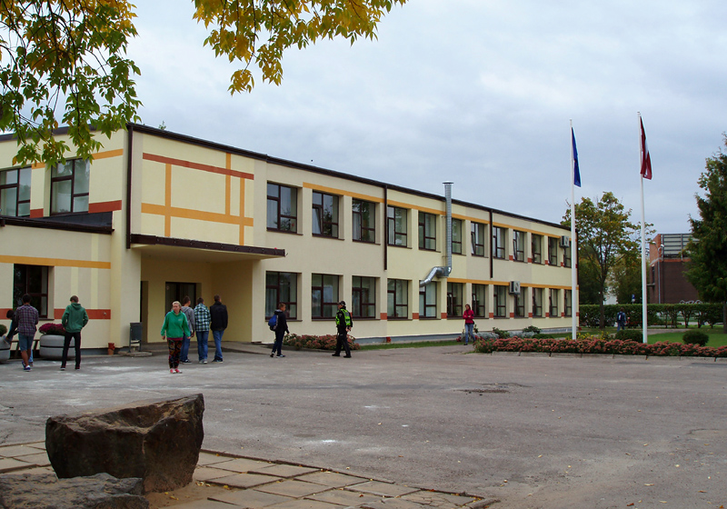

Salaspils 1.vidusskola
Salaspils 1. vidusskolas ir Salaspils novada domes pašvaldības iestāde. Mācības notiek latviešu valodā. Skola piedāvā gan pamatizglītības, gan vidējās izglītības programmas.
Salaspils vidusskolu dibināja pēc Rīgas HES būvēšanas uzsākšanas 1967. gadā, sākotnēji tā bija divplūsmu skola (latviešu un krievu),
taču pēc Salaspils 2. vidusskolas izveides 1973. gada mācības notika vienīgi latviešu valodā.

salaspils1.vidusskolas 1 korpus
Pirmdienas stundu saraksts
- Robotika
- Vācu valoda
- Vācu valoda
- Angļu valoda
- Angļu Valoda
- Klases Stunda
- Tehniskā grafika
- Tehniskā grafika
Otrdienas stundu saraksts
- Literatūra
- Latviešu Valoda
- Programmēšana
- Programēšana
- Matemātika
- Matemātika
Trešdienas stundu saraksts
- -
- Sports un Veselība
- Sports un Veselība
- Literatūra
- Literatūra
- matemātika
- matemātika
Ceturtdienas stundu saraksts
- Matemātika
- Matemātika
- Ķīmija
- Tehniskā Grafika
- Ģeogrāfija
- Ģeogrāfija
Piektdienas stundu saraksts
- Ķīmija
- Ķīmija
- Programēšana
- Ģeogrāfija
- Anģļu valoda
- Sports un Veselība
- Latviešu Valoda
- Latviešu Valoda